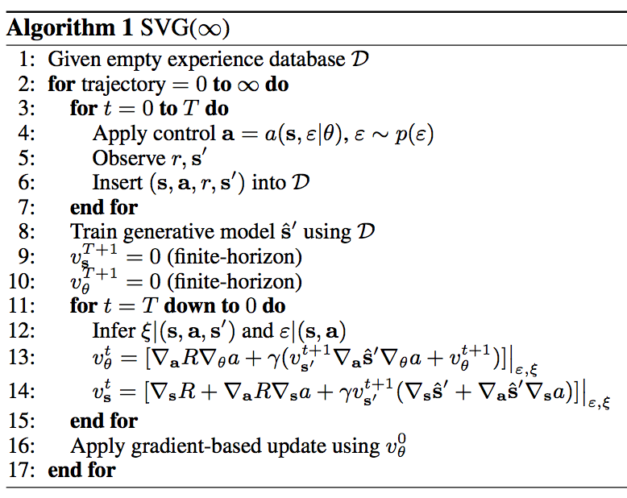
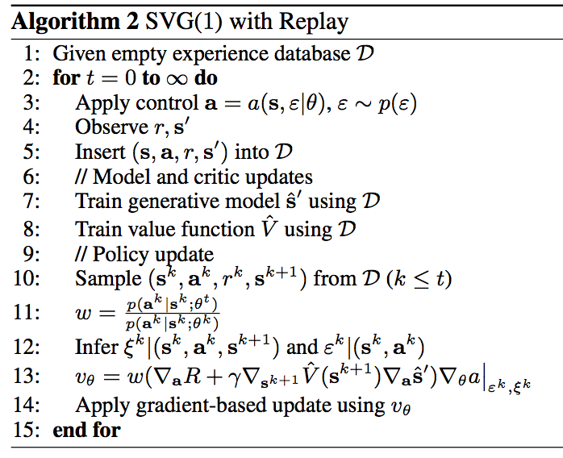
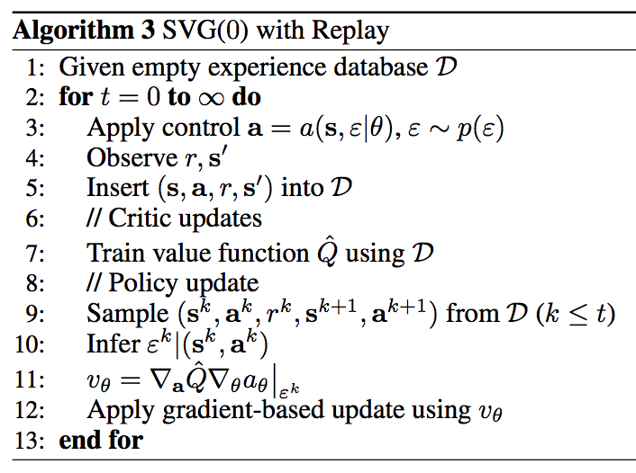
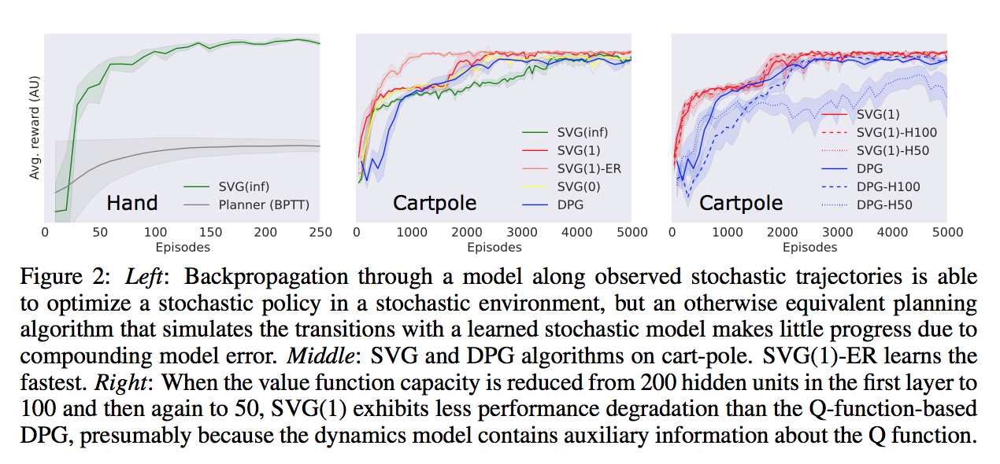
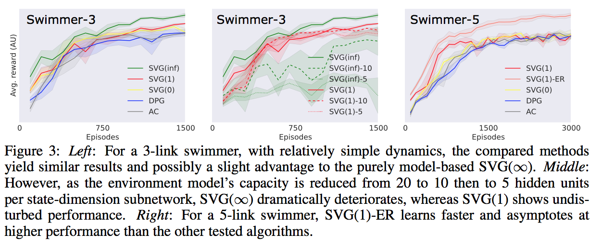
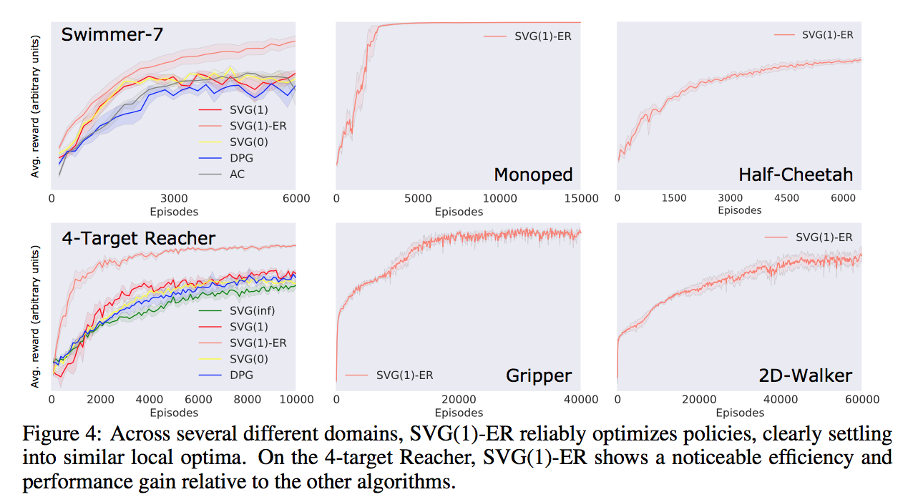

Learning Continuous Control Policies by Stochastic Value Gradients
Мотивация
Policy gradients методы типично считают градиент целевой функции (ожидаемой награды) с помощью REINFORCE aka score function оценки. Такие градиентные оценки, как известно, обладают высокой дисперсией и требуют дополнительных хитростей для её уменьшения. Вместе с тем людям, занимающимся генеративными моделями (особенно VAE), известно, что репараметризация позволяет получать градиентные оценки, на практике обладающие гораздо меньшей дисперсией. Поэтому в этой статье предлагается привнести этот опыт в область обучения с подкреплением.
Математика
Наша задача – максимизировать ожидаемую кумулятивную награду, стартовав из состояния \(s_0 \sim p(x_0)\): \[ J(\theta) = \mathbb{E}\left[R(a_0, s_0) + \gamma R(a_1, s_1) + \gamma^2 R(a_2, s_2) + \dots \mid s_0\right] \to \max_{\theta} \]
Где \(a_t \sim \pi_\theta(a_t \mid s_t)\) – наша параметрическая политика, и \(s_{t+1} \sim p(s_{t+1}\mid a_t, s_t)\) – динамика среды, \(R\) – награда. Ожидаемо, если мы хотим делать по-сути end-to-end обучение, нам нужно иметь дифференцируемую модель среды и дифференцируемую награду. Но их можно попробовать выучить.
Заметим, что мы, на самом деле, оптимизируем ожидаемую value-функцию начального состояния: \(J(\theta) = \mathbb{E}_{p(s_0)} V^{\pi_\theta}(s_0)\). Чтобы оптимизировать её как мы любим – стохастическим градиентным подъёмом, то есть – нужно лишь откуда-то достать \(\nabla_\theta V^{\pi_\theta} (s_0)\). Можно получить его прямо из этой формулы, а можно воспользоваться уравнением Беллмана, чтобы записать то же, но более компактно (с помощью рекурсивной формулы).
Вспоминаем уравнение Беллмана, описывающее value-функцию для политики \(\pi\): \[ V^{\pi}(s) = \mathbb{E}_{\pi(a|s)} \left[ R(a, s) + \gamma \mathbb{E}_{p(s'|a, s)} V^{\pi}(s') \right] \]
Детерминированный случай
Для начала посмотрим, как градиенты выглядят в детерминированном случае. Пусть политика у нас детерминированная: \(\pi_\theta(a|s) = \delta(a-a(s|\theta))\), \(a(s|\theta)\) генерирует действие для заданного состояния. И среда тоже детерминированная, т.е. \(p(s'|a, s) = \delta(s' - s'(a, s))\) (я обозначаю \(a\) и случайную величину действия и \(a(s|\theta)\) функцию, генерирующую её детерминированное значение, аналогично с \(s'\). В дальнейших формулах они будут взаимозменяемы). Тогда все мат. ожидания в уравнении Беллмана пропадают: \[ V^{\pi_\theta}(s) = R(a, s) + \gamma V^{\pi_\theta}(s') \]
Отсюда градиент \(\nabla_\theta V^{\pi_\theta}\): \[ \nabla_\theta V^{\pi_\theta} (s) = \nabla_a R \nabla_\theta a + \gamma \Bigl( \nabla_{s'} V^{\pi_\theta}(s') \nabla_a s' \nabla_\theta a + \nabla_\theta V^{\pi_\theta}(s')\Bigr) \] Выражение для \(V^{\pi_\theta}_{s'}\) получается из тех же соображений: \[ \nabla_s V^{\pi_\theta} (s) = \nabla_a R \nabla_s a(s|\theta) + \nabla_s R + \gamma \nabla_{s'} V^{\pi_\theta}(s') \Bigl( \nabla_s s' + \nabla_a s' \nabla_s a \Bigr) \]
Тут я перемешал полные производные с частными, опустил аргументы, а ещё в написанных формулах не сходятся размерности, но заинтересованный читатель сможет восстановить смысл написанных формул. Последнее слагаемое в скобках в выражении для \(\nabla_\theta V^{\pi_\theta}\) приходит от того, что \(V^{\pi_\theta}(s')\) зависит не только от текущего действия \(a\), но и от всех будущих (если всё ещё непонятно, то смотри в аппендиксе статьи).
Эти уравнения связывают градиент value-функции в текущем состоянии с value-функцией в следующем состоянии. В терминальном состоянии у нас не будет следующего состояния, поэтому чтобы посчитать градиент value-функции в начальном состоянии нужно просто пересчитывать градиенты в обратном по траектории направлении.
Стохастический случай
В общем-то, обобщение детерминированного случая на стохастический очевидно любому человеку, знакомому с репараметризацией: по-сути нужно просто добавить в \(a\) и \(s'\) случайности в нужном месте (например, если действия нормально распределены \(a(s|\theta) \sim \mathcal{N}(\mu_a(s|\theta), \sigma^2_a(s|\theta))\), то \(a(s, \varepsilon|\theta) = \mu_a(s|\theta) + \sigma_a(s|\theta) \varepsilon\)). Тогда уравнение Беллмана выглядит следующим образом:
\[ V^{\pi_\theta}(s) = \mathbb{E}_{\varepsilon \sim \mathcal{N}(0, I)} \left[ R(a(s, \varepsilon|\theta), s) + \gamma \mathbb{E}_{\xi \sim \mathcal{N}(0, I)} V^{\pi_\theta}( s'(s, a(s, \varepsilon|\theta), \xi ) ) \right] \]
Мы не дифференцируем по \(\varepsilon\) и \(\xi\), поэтому стохастические оценки градиента \(\nabla_\theta V^{\pi_\theta}\) будут выглядеть так же, как и в детерминированном случае, появятся только дополнительные аргументы \(\xi\) и \(\varepsilon\).
SVG(∞)
И всё бы ничего, но на практике мы, как правило, не знаем модель среды \(s'(s, a, \xi)\). Мы, конечно, заменим её на что-то выученное \(\hat s'(s, a, \xi|\phi)\), но в таком случае наши \(\xi\) и \(\varepsilon\) не будут соответствовать семплам из среды \(a_t\) и \(s_{t+1}\). Однако, благодаря Байесу можно переписать оценки градиентов в терминах семплов \(a\) и \(s'\), а \(\xi\) и \(\varepsilon\) на них обусловиться. А именно, мы получаем
\[ \nabla_\theta V^{\pi_\theta} (s) = \mathbb{E}_{\pi_\theta(a|s)} \mathbb{E}_{p(s'|s, a)} \mathbb{E}_{p(\varepsilon, \xi|s, a, s')} \left[ \nabla_a R \nabla_\theta a + \gamma \Bigl( \nabla_{s'} V^{\pi_\theta}(s') \nabla_a \hat{s}' \nabla_\theta a + \nabla_\theta V^{\pi_\theta}(s')\Bigr) \right] \]
Аналогично для \(\nabla_s V^{\pi_\theta}(s)\). При некоторых предположениях (например, гауссовости всего на свете) можно аналитически найти \(p(\xi, \varepsilon|s, a, s')\).
Кстати, бесконечность в названии метода от того, что мы должны доиграть эпизод до конца, прежде чем сможем посчитать градиент и чему-нибудь обучиться.
Алгоритм получается такой:

SVG(1)
Всё здорово, но вышеописанный алгоритм может иметь очень высокую дисперсию из-за необходимости “раскрутить” эпизод до конца. Кроме того, это on-policy алгоритм, т.е. он не умеет в experience replay. Можно было бы сделать Importance Sampling для превращения его в off-policy, но тогда весами были бы отношения вероятностей всех траекторий, что раздуло бы дисперсию ещё больше.
Поэтому предлагается два нововведения:
- Критик \(\hat V(s|\nu)\), приближающий \(\mathbb{E} V(s)\). Теперь мы вместо односемпловой Монте Карло оценки \(\nabla_s V^{\pi_\theta} (s)\) будем использовать производную критика \(\nabla_s \hat V(s|\nu)\), в котором, как мы надеемся, вся случайность выинтегрирована.
- Давайте раскручивать эпизод только на один шаг вперёд. По-сути, это эквивалетно удалению члена \(\nabla_\theta V^{\pi_\theta}(s')\) из формулы градиента \(\nabla_\theta V^{\pi_\theta} (s)\). Тогда можно делать off-policy обучение (и, соответственно, experience replay) с помощью Importance Sampling’а, ведь корректирующими весами будут не отношения вероятностей всех траекторий, а лишь отношение вероятностей конкретных действий 1.
Алгоритм получается такой: 
Можно, конечно, рассмотреть SVG(k) для разных k, а можно пойти дальше и вспомнить про TD(λ). И правда, если заглянуть в исходники статьи (доступны на архиве), то можно обнаружить упоминание некоего SVG(λ), который представляет собой λ-интерполяцию между раскруткой эпизода до конца и использованием критика для следующего шага. То есть, формула градиента value-функции по состоянию будет выглядеть так:
\[ \nabla_s V^{\pi_\theta} (s) = \mathbb{E}_{\pi(a|s)} \mathbb{E}_{p(s'|s, a)} \mathbb{E}_{p(\varepsilon, \xi|s, a, s')} \left[ \nabla_a R \nabla_s a + \nabla_s R + \gamma \nabla_{s'} \tilde V^{\pi_\theta}_{\lambda}(s') \Bigl( \nabla_s \hat{s}' + \nabla_a \hat{s}' \nabla_s a \Bigr) \right] \]
Где \(\tilde V^{\pi}_{\lambda}(s) = \lambda V^{\pi}(s) + (1-\lambda) \hat V(s|\nu)\). Однако, не стоит придавать этой формуле большого значения, её ведь удалили из итоговой статьи (и experience replay с ней не работает).
SVG(0)
Пока мы обсуждали только model-based подход, считая, что модель достаточно просто выучить (в сравнении со сложность изучения \(Q\)-функции). Если это не так, то можно выучить \(Q\)-функцию и делать model-free подход. Для этого предлагается следующий алгоритм (я уверен, авторы забыли IS коэффициент).

Обоснование этому примерно такое, что \[ J(\theta) = \mathbb{E}_{s_0} \mathbb{E}_{\pi_\theta(a|s_0)} Q(a, s_0) \]
Это получается такой забавный Q-learning, где мы пользуется не ε-жадной политикой, а какой-то выученной.
Эксперименты
Сначала авторы показывают, как важно то, что они сумели обсуловиться на реальные траектории – иначе ошибка слишком сильно накапливается. Потом они сравниваются с Deterministic Policy Gradients.

Далее идут сравнения предложенных методов с DPG и Actor-Critic’ом в двух средах различной сложности (плюс см. следующий график). Средний график измеряет чувствительность предложенных алгоритмов к модели среды – SVG(∞) ломается довольно сильно при ухудшении среды, а вот SVG(1) – нет. 
Вот ещё эксперименты, как утверждают авторы, в более сложных средах: 
Резюме
Интересная работа по использованию достижений нейробайесовских моделей в обучении с подкреплением. Я так и не понял из статьи, откуда авторы берут производные функции награды – доступны ли они им аналитически, или они их выучивают?
Наверное, если использовать последние достижения в области релаксаций моделей с дискретными переменными, можно обобщить этот метод на среды с дискретными действиями.
Вообще, конечно, наша генеративная модель состояний тоже меняется по ходу обучения и надо бы сделать поправку и на это тоже, т.е. добавить IS веса для нового состояния, однако, авторы утверждают, что “this is widely considered to be intractable”.↩